Jefa de Casa
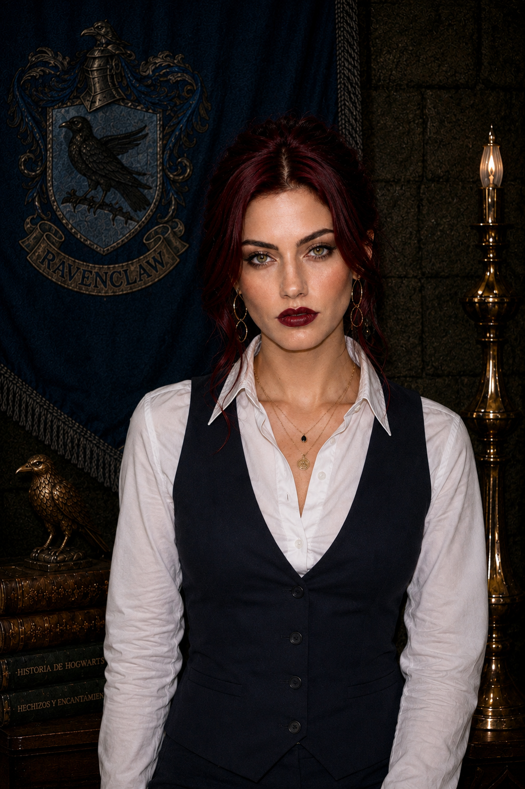
Seraphine Evelisse Nighttide
Encantamientos · Jefa de Casa de Ravenclaw
Fundada por Rowena Ravenclaw, la Casa Ravenclaw ha reunido durante generaciones a estudiantes caracterizados por su curiosidad, creatividad, inteligencia y deseo de aprender.
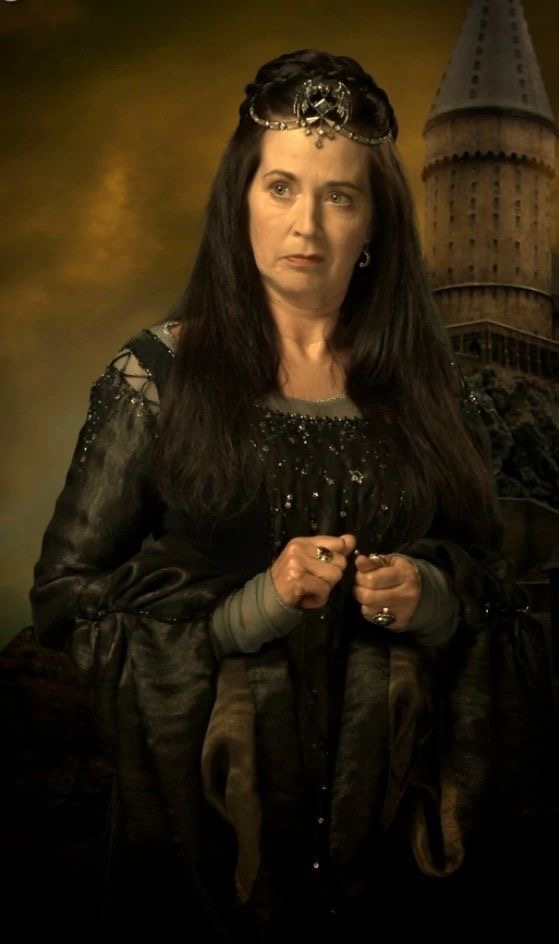
Rowena Ravenclaw fue una de las cuatro fundadoras del Colegio Hogwarts de Magia y Hechicería. Reconocida por su extraordinaria inteligencia, creatividad y sabiduría, valoraba especialmente a aquellos estudiantes que demostraban curiosidad, ingenio y un profundo deseo de aprender.
Su legado continúa presente en los estudiantes de Ravenclaw, una casa donde el conocimiento no consiste únicamente en encontrar respuestas, sino también en atreverse a formular nuevas preguntas y descubrir distintas maneras de comprender el mundo.

Encantamientos · Jefa de Casa de Ravenclaw
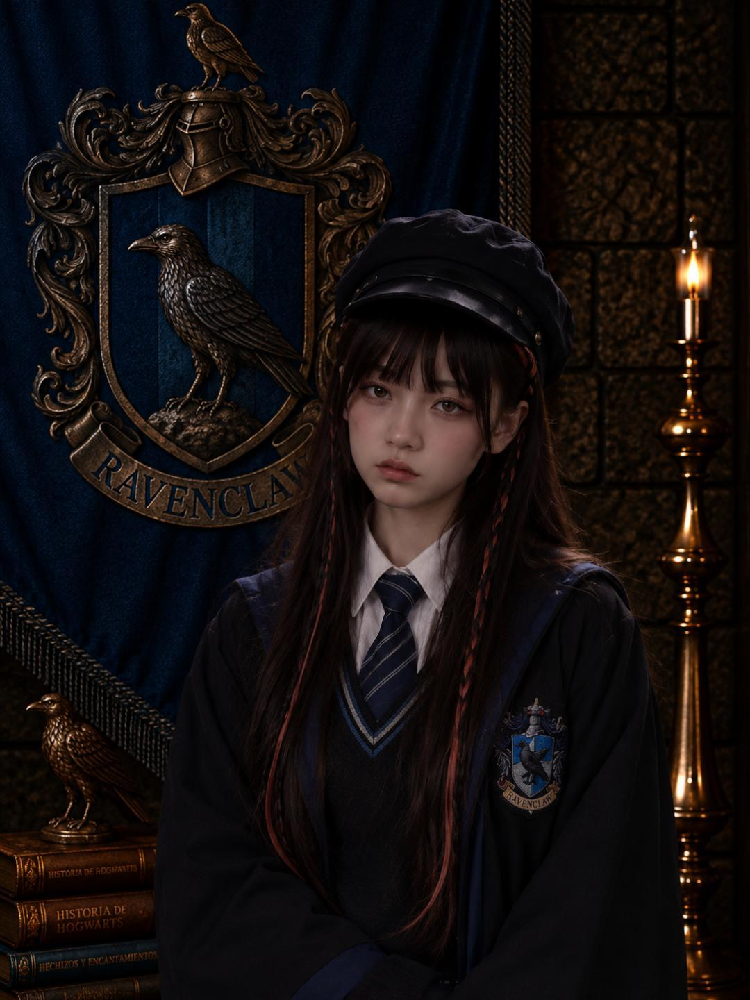
Segundo Año · Quidditch

Segundo Año

Segundo Año · Comité del Anuario
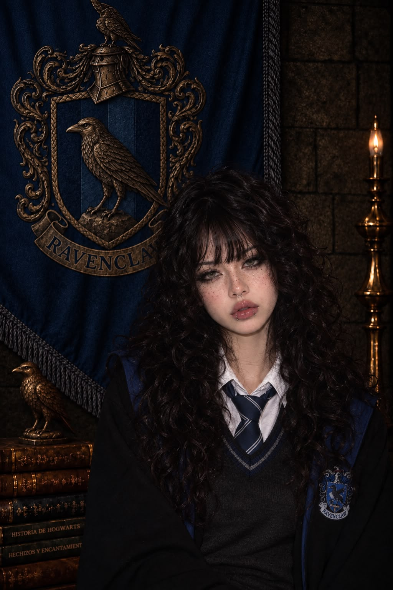
Cuarto Año · Prefecta · Quidditch

Cuarto Año · Jefa del Comité del Anuario

Cuarto Año · Porrista · Anuario
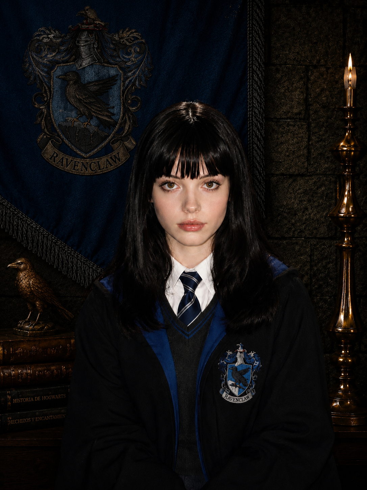
Quinto Año · Jefa de Prefectos
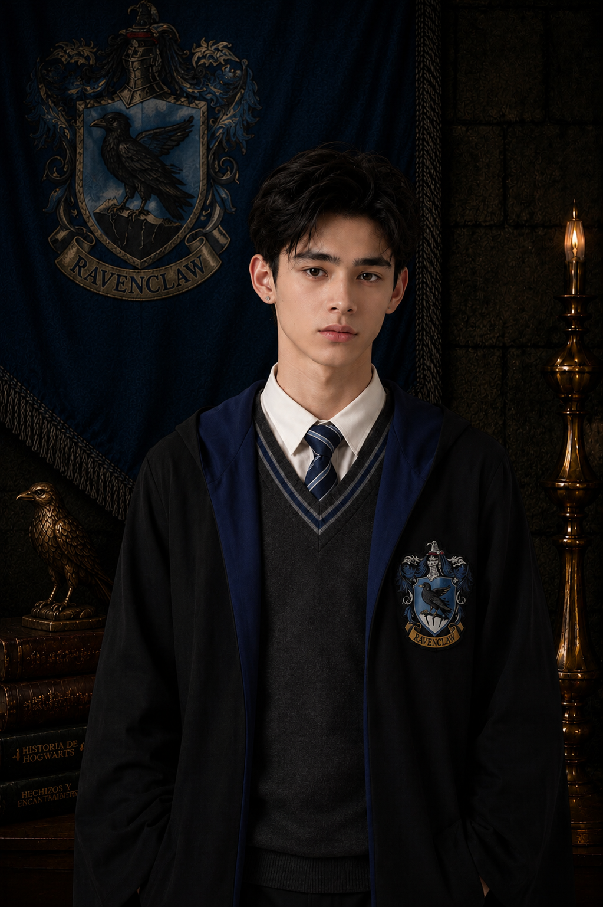
Quinto Año · Prefecto · Quidditch
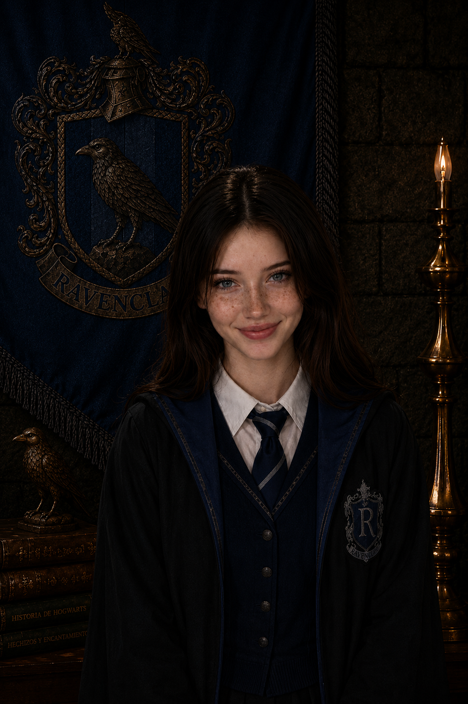
Quinto Año · Prefecta
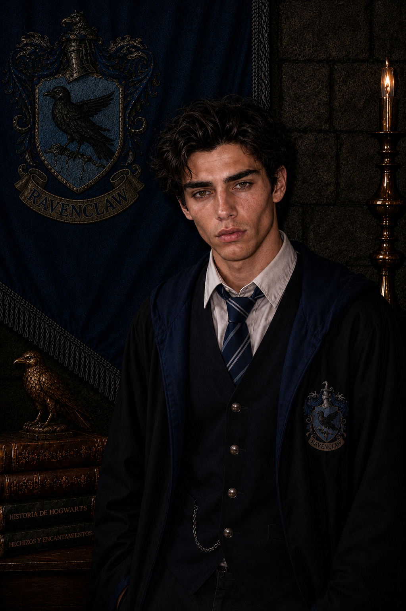
Quinto Año · Prefecto
Capitán de Quidditch

Quinto Año · Quidditch

Quinto Año · Prefecta · Quidditch

Quinto Año · Comité del Anuario

Quinto Año

Quinto Año

Quinto Año
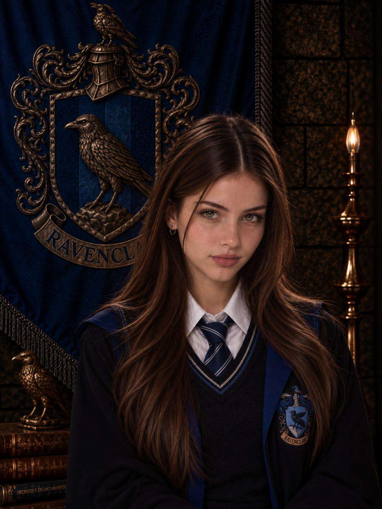
Sexto Año · Quidditch · Subcapitana

Sexto Año · Porrista

Sexto Año

Sexto Año
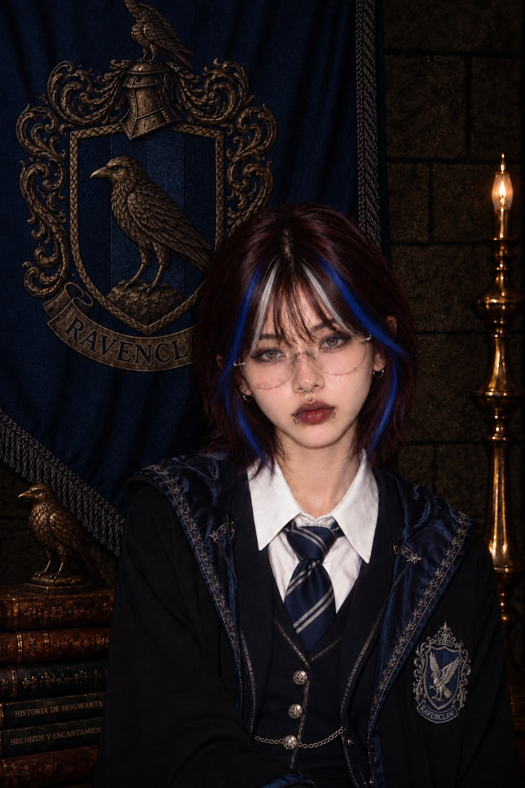
Sexto Año
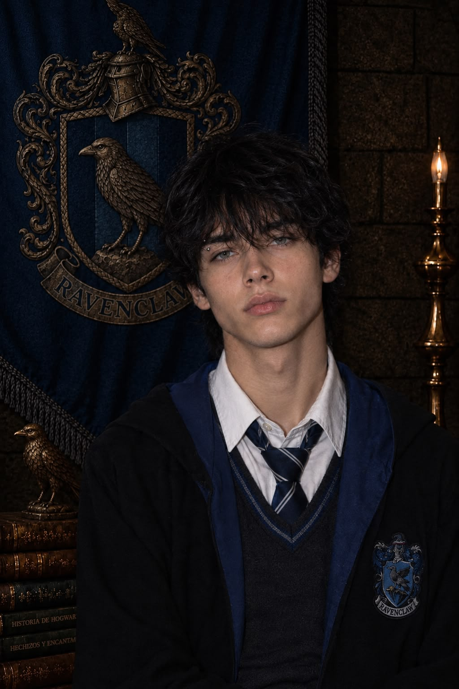
Sexto Año · Ravenclaw
✦ Siempre parte de Ravenclaw ✦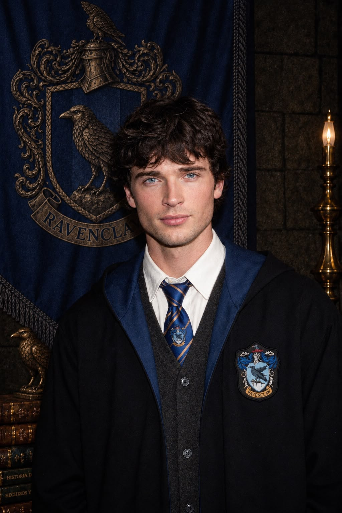
Séptimo Año

Séptimo Año

Séptimo Año

Séptimo Año · Comité del Anuario

Séptimo Año · Porrista · Anuario

Séptimo Año
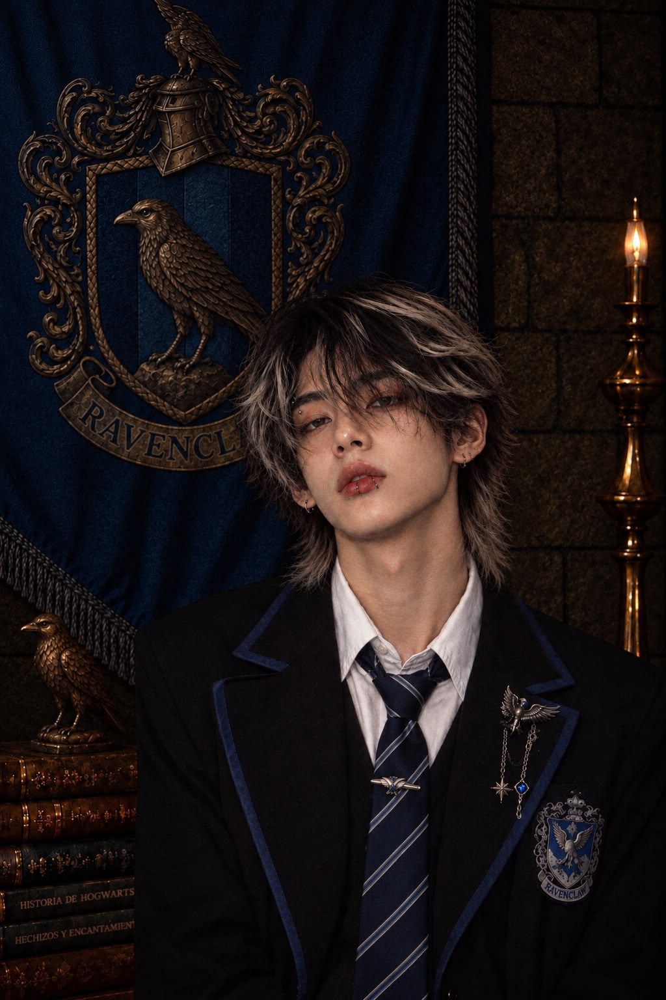
Séptimo Año
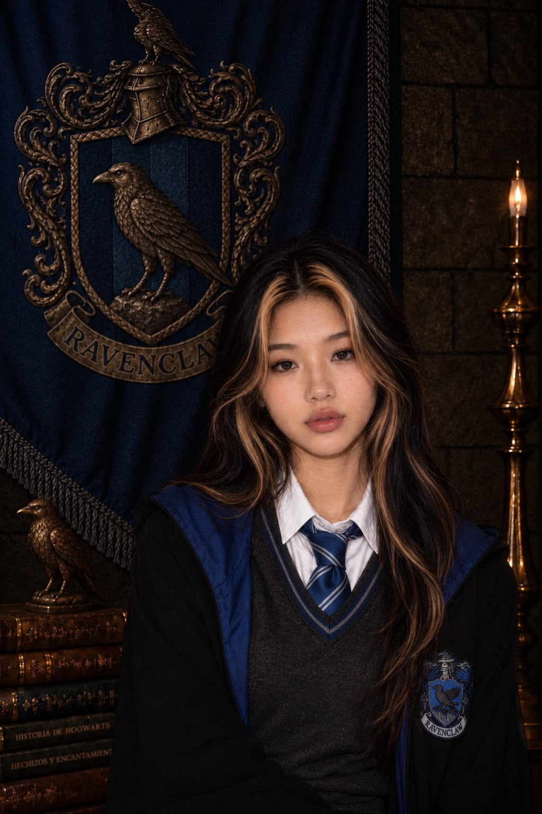
Séptimo Año · Quidditch